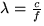
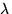
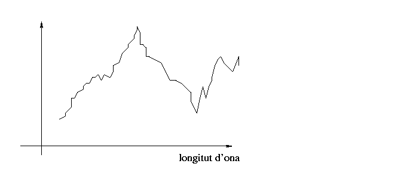

En aquest apartat veurem que un color és caracteritzat per una distribució espectral, i discutirem com els nostres ulls el perceben.
Segons el problema, els físics pensen en la llum com la propagació d'energia electromagnètica en forma d'onas o com a feixos de partícules (fotons). Des del punt de vista dels gràfics per computador, el model d'ones serà suficient per a explicar el comportament de la llum, la seva naturalesa i la nostra percepció dels diferents tipus de llums.
Els nostres ulls són capaços de percebre ones lluminoses entre els 380 nanòmetres (nm) de longitud d'ona (el violeta) i els 760 nanòmetres de longitud d'ona (el vermell). Recordem que la longitud d'ona és la distància recorreguda per l'ona en el temps que triga en fer un cicle complet. Per tant  on  és la longitud d'ona, c la velocitat de la llum (aproximadament 3x108m/s),i f la freqüència (en cicles/s.).
Normalment la llum que veiem no és però d'una única freqüència pura,
sinó que és una barreja o superposició de multitud d'ones de
diferents freqüències. La naturalesa exacta d'una certa llum (el
color de la llum) es pot capturar doncs en un diagrama espectral que
indica les freqüències que hi intervenen i l'amplitud de cadascuna:
|  |
Observeu que des d'aquest punt de vista, la naturalesa de la llum és de dimensió infinita. El diagrama espectral indica la intensitat amb que hi participa cada freqüència, i aquestes formen un continu. Això fóra força difícil de tractar direcament en els nostres programes, quan volguem modelar diferents tipus de llums. Afortunadament, els nostres ulls no són capaços de distingir aquesta enorme varietat de llums possibles, i el nostre propòsit és en última instància modelar els colors que som capaços de veure. Però caldrà primer fer una petita disgresió i parlar de com els nostres ulls veuen el color.
Els nostres ulls són com petites càmeres fotogràfiques, amb la córnea i els cristalins (a la part anterior) fent d'objectiu, i la retina fent les vegades de pel·lícula.
A la retina, existeixen diferents receptors especialitzats que transformen la llum incident en impulsos nerviosos que el nostre sistema nerviós i cervell eventualment decodifiquen en les imatges que veiem. Aquests receptors a la retina són de dos tipus ben diferenciats: bastons i cons (que deuen els seus noms a la seva forma diferent). Els primers són sensibles a la intensitat de la llum, sense importar la longitud d'ona. Esencialment formen una imatge blanc i negre (amb grissos, s'enten) del que veiem.
Els segons, els cons, afegeixen la component de color. Normalment hi ha sols entre sis i set milions a cada ull, gairebé tots ubicats prop del centre de la retina (on es formarà la imatge d'allò al que mirem directament). Els bastons en canvi són molt més nombrosos (hi ha de 75 a 150 milions a cada ull), però cobreixen una àrea molt més extensa.
Els cons, al seu torn, estan dividits en tres classes diferents, que
es distingeixen per la seva sensibilitat
espectral. Aquestes tres distribucions espectrals classifiquen
els cons en cons sensibles al vermell, d'altres sensibles al verd i
d'altres al blau. [NOTA] Observeu
doncs que els ulls mesuren propietats molt simples de l'espectre de la llum
incident: llums espectralment diferents des del punt de vista de la
seva distribució espectral
són percebudes com iguals.